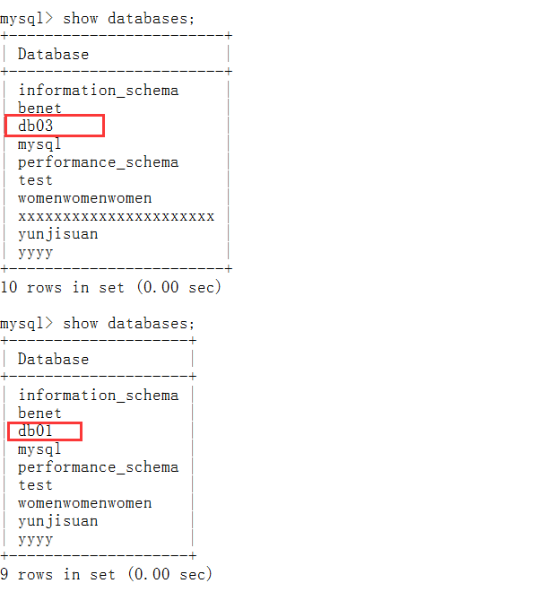
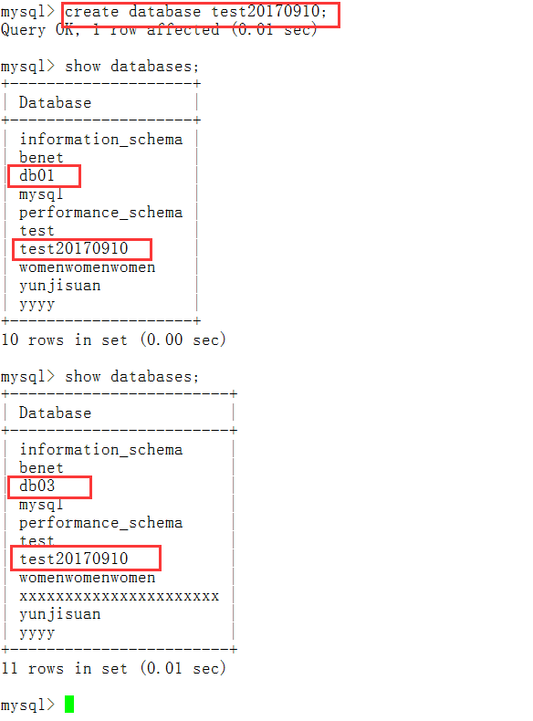

9.mysql中间件Atlas
9.1 Atlas简介
Atlas是由Qihoo-360公司web平台部基础架构团队开发维护的一个基于MySQL协议的数据中间层项目。它在MySQL官方推出的MySQL-Proxy-0.8.2版本的基础上，修改了大量bug，添加了很多功能特性。它在MySQL官方推出的MySQL-Proxy0.8.2版本的基础上，修改了大量bug，添加了很多功能特性。
9.2 Atlas主要功能
- 读写分离
- 从库负载均衡
- IP过滤
- 自动分表
- DBA可平滑上下线DB
- 自动摘除宕机的DB
9.3 Atlas相对于官方MySQL-Proxy的优势
- 将主流程中所有Lua代码用C重写，Lua仅用于管理接口；
- 重写网络模型，线程模型 ；
- 实现了真正意义上的连接池 ；
- 优化了锁机制，性能提高数十倍 。
9.4 安装Atlas
安装Atlas超级简单，官方提供的Atlas有两种： （普通）：Atlas-2.2.1.el6.x86_64.rpm （分表）：Atlas-sharding_1.0.1-el6.x86_64.rpm
这里我们只需要下载普通的即可
[root@mysql-db03 rpm]# rpm -ivh Atlas-2.2.1.el6.x86_64.rpm
Preparing... ########################################### [100%]
package Atlas-2.2.1-1.x86_64 is already installed
9.5 配置Atlas
当我们用vim打开/usr/local/mysql-proxy/conf时，我们惊喜的发现，这个配置文件简直太简单了。
（1）配置文件里需要做如下修改：
#需要修改的内容一览：
[root@mysql-db03 ~]# cat -n /usr/local/mysql-proxy/conf/test.cnf.bak | egrep -w "12|15|18|30|36|45|48"
12 proxy-backend-addresses = 127.0.0.1:3306
15 #proxy-read-only-backend-addresses = 127.0.0.1:3305@1
18 pwds = user1:+jKsgB3YAG8=, user2:GS+tr4TPgqc=
30 log-level = message
36 #sql-log = OFF
45 proxy-address = 0.0.0.0:1234
48 admin-address = 0.0.0.0:2345
#将上边内容修改为如下配置：
[root@mysql-db03 ~]# cat -n /usr/local/mysql-proxy/conf/test.cnf | egrep -w "12|15|18|30|36|45|48"
12 proxy-backend-addresses = 192.168.0.60:3307 #这里添加VIP地址
15 proxy-read-only-backend-addresses = 192.168.0.51:3307@1,192.168.0.53:3307@1 #从库地址
18 pwds = root:++gAN07C/Q0=,mha:++gAN07C/Q0= #MySQL授权用户账号密码（密码要加密）
30 log-level = error #日志级别
36 sql-log = ON #打开日志
45 proxy-address = 192.168.0.53:3306 #Atlas的工作监听端口（提供代理服务）
48 admin-address = 192.168.0.53:1234 #Atlas的管理监听端口
> 提示：
> 主从复制的主从数据库的默认3306端口需要修改成3307
> 第18行为登陆MySQL的授权账号信息，其中密码需要加密（通过/usr/local/mysql-proxy/bin/encrypt加密工具来加密）
（2）修改每个数据库的服务端口为3307
#先杀掉mha管理进程
[root@mysql-db03 conf]# ps -ef | grep mha | grep -v grep
root 15697 1 0 Sep05 ? 00:00:09 perl /usr/bin/masterha_manager --conf=/etc/mha/mha1.cnf --remove_dead_master_conf --ignore_last_failover
[root@mysql-db03 conf]# kill -9 15697
[root@mysql-db03 conf]# ps -ef | grep mha | grep -v grep
#修改mysql-db01,mysql-db02,mysql-db03上的MySQL服务端口为3307
[root@mysql-db03 conf]# sed -n '13p' /etc/my.cnfport = 3307
[root@mysql-db02 conf]# sed -n '13p' /etc/my.cnfport = 3307
[root@mysql-db01 conf]# sed -n '13p' /etc/my.cnfport = 3307
（3）重启每个数据库的服务
过程略
（4）将从库mysql-db01和mysql-db03指向主库mysql-db02进行同步
#mysql-db01和mysql-db03的操作步骤相同
mysql> stop slave; #停止从同步
Query OK, 0 rows affected (0.00 sec)
mysql> CHANGE MASTER TO MASTER_HOST='192.168.0.52', MASTER_PORT=3307, MASTER_AUTO_POSITION=1, MASTER_USER='rep', MASTER_PASSWORD='123123'; #授权同步信息
Query OK, 0 rows affected, 2 warnings (0.01 sec)
mysql> start slave; #开始同步
ERROR 1064 (42000): You have an error in your SQL syntax; check the manual that corresponds to your MySQL server version for the right syntax to use near 'slavee' at line 1
mysql> start slave;
Query OK, 0 rows affected, 1 warning (0.02 sec)
mysql> show slave status\G
*************************** 1. row ***************************
Slave_IO_State: Waiting for master to send event
Master_Host: 192.168.0.52
Master_User: rep
Master_Port: 3307
Connect_Retry: 60
Master_Log_File: mysql-bin.000010
Read_Master_Log_Pos: 271
Relay_Log_File: mysql-db01-relay-bin.000002
Relay_Log_Pos: 361
Relay_Master_Log_File: mysql-bin.000010
Slave_IO_Running: Yes #同步成功
Slave_SQL_Running: Yes #同步成功
Replicate_Do_DB:
··以下省略若干行··
（5）修改mha配置文件
[server default]
manager_log=/var/log/mha/mha1/manager
manager_workdir=/var/log/mha/mha1
master_binlog_dir=/usr/local/mysql/data
master_ip_failover_script=/usr/local/bin/master_ip_failover
password=123123
ping_interval=2
repl_password=123123
repl_user=rep
ssh_user=root
user=mha
[server1]
hostname=192.168.0.51
port=3307 #修改端口号
[server2]
hostname=192.168.0.52
port=3307 #修改端口号
[server3]
hostname=192.168.0.53
port=3307 #修改端口号
[binlog1]
no_master=1
hostname=192.168.0.53
master_binlog_dir=/data/mysql/binlog/
（6）启动mysqlbinlog日志备份的进程
[root@mysql-db03 binlog]# ps -ef | grep mysqlbinlog | grep -v grep
[root@mysql-db03 binlog]# mysqlbinlog -R --host=192.168.0.52 --port=3307 --user=mha --password=123123 --raw --stop-never mysql-bin.000001 &
[1] 24880
[root@mysql-db03 binlog]# ps -ef | grep mysqlbinlog | grep -v grep
root 24880 22198 0 01:38 pts/1 00:00:00 mysqlbinlog -R --host=192.168.0.52 --port=3307 --user=mha --password=x xxxx --raw --stop-never mysql-bin.000001
（7）启动mha管理进程
[root@mysql-db03 conf]# ps -ef | grep perl | grep -v grep
[root@mysql-db03 conf]# nohup masterha_manager --conf=/etc/mha/mha1.cnf --remove_dead_master_conf --ignore_last_failover < /dev/null > /var/log/mha/mha1/manager.log 2>&1 &
[1] 24895
[root@mysql-db03 conf]# ps -ef | grep perl | grep -v grep
root 24895 17795 3 01:41 pts/0 00:00:00 perl /usr/bin/masterha_manager --conf=/etc/mha/mha1.cnf --remove_dead_master_conf --ignore_last_failover
（8）启动Atlas服务
[root@mysql-db03 conf]# /usr/local/mysql-proxy/bin/mysql-proxyd test start
OK: MySQL-Proxy of test is started
[root@mysql-db03 conf]# ps -ef | grep mysql-proxy | grep -v grep
root 25005 1 0 01:43 ? 00:00:00 /usr/local/mysql-proxy/bin/mysql-proxy --defaults-file=/usr/local/mysql-proxy/conf/test.cnfroot 25006 25005 0 01:43 ? 00:00:00 /usr/local/mysql-proxy/bin/mysql-proxy --defaults-file=/usr/local/mysql-proxy/conf/test.cnf
#说明：
#为何启动服务需要加test，因为在Atlas配置文件里定义了一个实例名字为test
#Atlas实际是启动了某个实例（当然也可以多实例）
[root@mysql-db03 conf]# netstat -antup | grep mysql-proxy
tcp 0 0 0.0.0.0:1234 0.0.0.0:* LISTEN 25006/mysql-proxy
tcp 0 0 0.0.0.0:3306 0.0.0.0:* LISTEN 25006/mysql-proxy
#说明：
#监听3306的为Atlas对外提供代理的端口；监听1234是Atlas的管理监听端口
9.6 登陆Atlas管理端口
[root@mysql-db03 conf]# mysql -uuser -ppwd -P1234 -h 192.168.0.53 #登陆Atlas管理端
Warning: Using a password on the command line interface can be insecure.
Welcome to the MySQL monitor. Commands end with ; or \g.
Your MySQL connection id is 1
Server version: 5.0.99-agent-admin
Copyright (c) 2000, 2014, Oracle and/or its affiliates. All rights reserved.
Oracle is a registered trademark of Oracle Corporation and/or itsaffiliates. Other names may be trademarks of their respectiveowners.
Type 'help;' or '\h' for help. Type '\c' to clear the current input statement.
mysql> show databases; #看所有库，报错，并不让看
ERROR 1105 (07000): use 'SELECT * FROM help' to see the supported commandsmysql> select * from help； #按提示输入命令
+----------------------------+---------------------------------------------------------+| command | description |
+----------------------------+---------------------------------------------------------+| SELECT * FROM help | shows this help |
| SELECT * FROM backends | lists the backends and their state |
| SET OFFLINE $backend_id | offline backend server, $backend_id is backend_ndxs id |
| SET ONLINE $backend_id | online backend server, ... |
| ADD MASTER $backend | example: "add master 127.0.0.1:3306", ... |
| ADD SLAVE $backend | example: "add slave 127.0.0.1:3306", ... |
| REMOVE BACKEND $backend_id | example: "remove backend 1", ... |
| SELECT * FROM clients | lists the clients |
| ADD CLIENT $client | example: "add client 192.168.1.2", ... |
| REMOVE CLIENT $client | example: "remove client 192.168.1.2", ... |
| SELECT * FROM pwds | lists the pwds |
| ADD PWD $pwd | example: "add pwd user:raw_password", ... |
| ADD ENPWD $pwd | example: "add enpwd user:encrypted_password", ... |
| REMOVE PWD $pwd | example: "remove pwd user", ... |
| SAVE CONFIG | save the backends to config file |
| SELECT VERSION | display the version of Atlas |
+----------------------------+---------------------------------------------------------+
16 rows in set (0.00 sec)
mysql> select * from backends； #输入上边列表里的命令，出现下表
+-------------+-------------------+-------+------+
| backend_ndx | address | state | type |
+-------------+-------------------+-------+------+
| 1 | 192.168.0.60:3307 | up | rw |
| 2 | 192.168.0.51:3307 | up | ro |
| 3 | 192.168.0.53:3307 | up | ro |
+-------------+-------------------+-------+------+
3 rows in set (0.00 sec)
这里是平滑管理界面，可以在这里根据选项修改设置
9.7 进行读写分离及读负载均衡测试
（1）在mysql-db01和mysql-db03上的本地MySQL（3307端口）创建一个库
#在mysql-db03上的本地3307端口的数据库里创建一个库
[root@mysql-db03 binlog]# mysql -uroot -p123123 -P3307 #登陆本地MySQL
Warning: Using a password on the command line interface can be insecure.
Welcome to the MySQL monitor. Commands end with ; or \g.
Your MySQL connection id is 30
Server version: 5.6.17-log MySQL Community Server (GPL)
Copyright (c) 2000, 2014, Oracle and/or its affiliates. All rights reserved.
Oracle is a registered trademark of Oracle Corporation and/or itsaffiliates. Other names may be trademarks of their respectiveowners.
Type 'help;' or '\h' for help. Type '\c' to clear the current input statement.
mysql> show databases;
+--------------------+
| Database |
+--------------------+
| information_schema |
| benet |
| mysql |
| performance_schema |
| test |
| yunjisuan |
+--------------------+
6 rows in set (0.00 sec)
mysql> create database db03; #创建一个库db03
Query OK, 1 row affected (0.00 sec)
mysql> show databases;
+--------------------+
| Database |
+--------------------+
| information_schema |
| benet |
| db03 |
| mysql |
| performance_schema |
| test |
| yunjisuan |
+--------------------+
7 rows in set (0.00 sec)
#在mysql-db01上的本地3307端口的数据库里创建一个库
[root@mysql-db01 ~]# mysql -uroot -p123123 -P3307
Warning: Using a password on the command line interface can be insecure.Welcome to the MySQL monitor. Commands end with ; or \g.Your MySQL connection id is 37Server version: 5.6.17-log MySQL Community Server (GPL)Copyright (c) 2000, 2014, Oracle and/or its affiliates. All rights reserved.Oracle is a registered trademark of Oracle Corporation and/or itsaffiliates. Other names may be trademarks of their respectiveowners.Type 'help;' or '\h' for help. Type '\c' to clear the current input statement.mysql> show databases;+--------------------+
| Database |
+--------------------+
| information_schema |
| benet |
| mysql |
| performance_schema |
| test |
| yunjisuan |
+--------------------+
6 rows in set (0.00 sec)
mysql> create database db01;
Query OK, 1 row affected (0.00 sec)
mysql> show databases;
+--------------------+
| Database |
+--------------------+
| information_schema |
| benet |
| db01 |
| mysql |
| performance_schema |
| test |
| yunjisuan |
+--------------------+
7 rows in set (0.00 sec)
（2）登陆mysql-db02（主库）进行查看
[root@mysql-db02 ~]# mysql -uroot -p123123 -P3307
Warning: Using a password on the command line interface can be insecure.
Welcome to the MySQL monitor. Commands end with ; or \g.
Your MySQL connection id is 11
Server version: 5.6.17-log MySQL Community Server (GPL)
Copyright (c) 2000, 2014, Oracle and/or its affiliates. All rights reserved.
Oracle is a registered trademark of Oracle Corporation and/or itsaffiliates. Other names may be trademarks of their respectiveowners.
Type 'help;' or '\h' for help. Type '\c' to clear the current input statement.
mysql> show databases;
+--------------------+
| Database |
+--------------------+
| information_schema |
| benet |
| mysql | #主库192.168.0.52里并没有之前创建的db01或db03
| performance_schema |
| test |
| yunjisuan |
+--------------------+
6 rows in set (0.00 sec)
3）在mysql-db03的本地登陆Atlas代理的3306端口
[root@mysql-db03 ~]# mysql -uroot -p123123 -h 192.168.0.53

由此可见，已经实现了读负载均衡
（4）我们在mysql-db03的Atlas代理的MySQL服务端口里进行写入操作，测试读写分离
[root@mysql-db03 ~]# mysql -uroot -p123123 -h 192.168.0.53

由此可见，mysql-db01和mysql-db3的库里都出现了test20170910的库。只有一个可能，数据是被写入了主库192.168.0.52里，然后同步到的从库。因此，读写分离测试完毕。